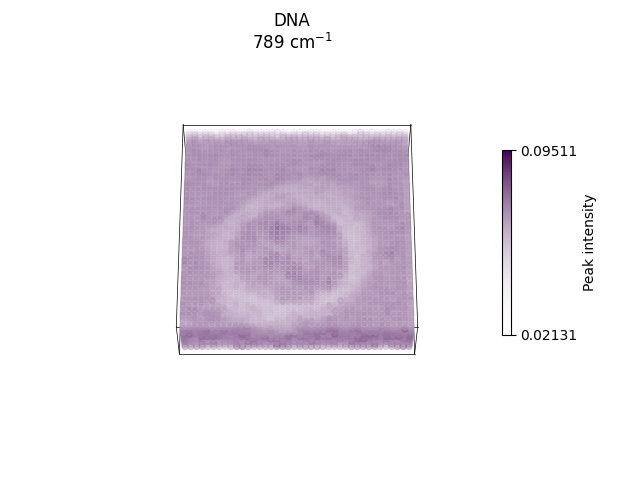
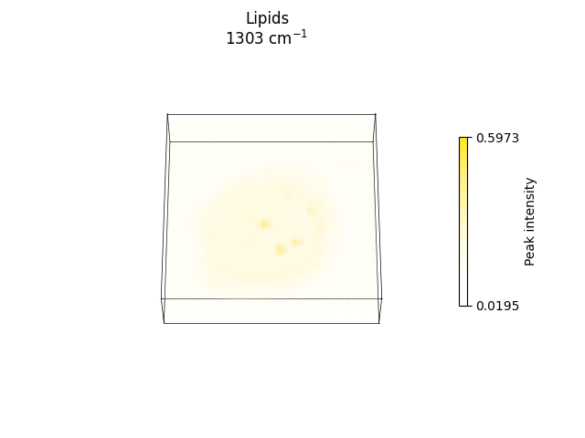
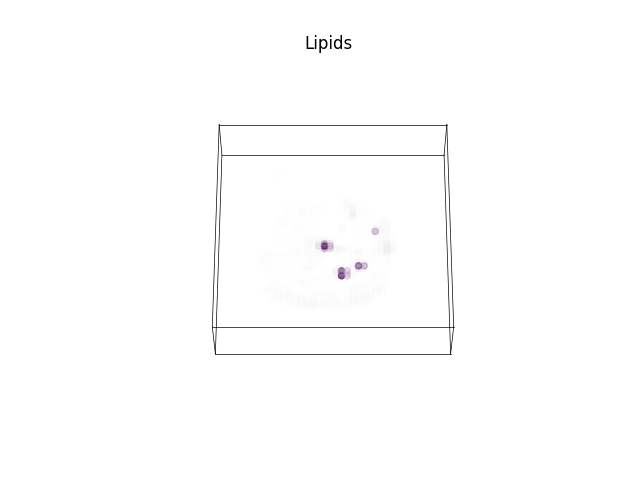
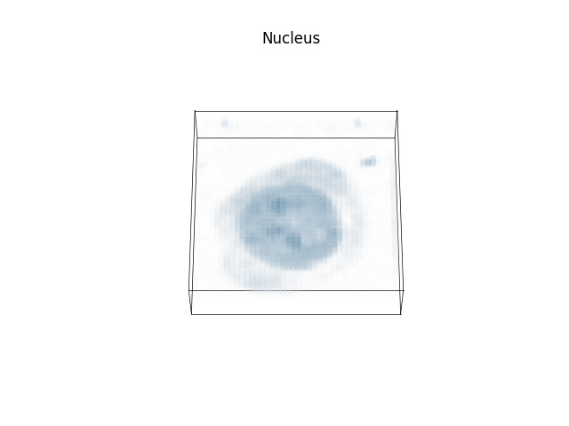
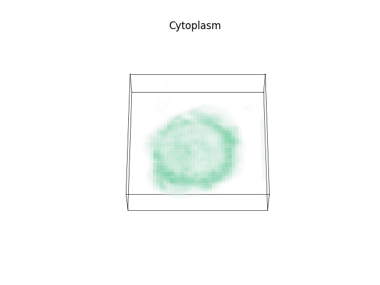
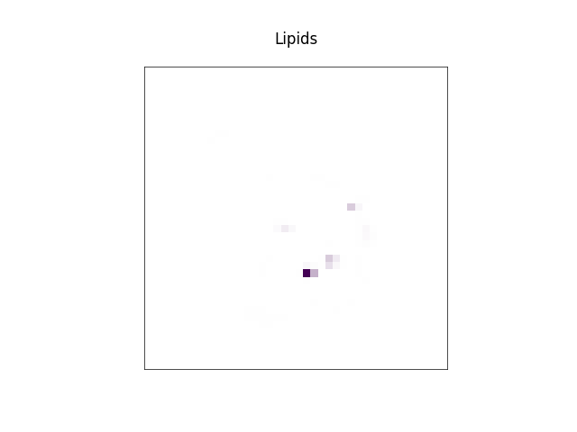
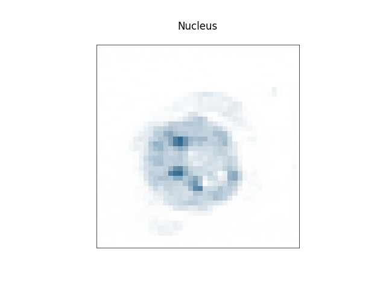
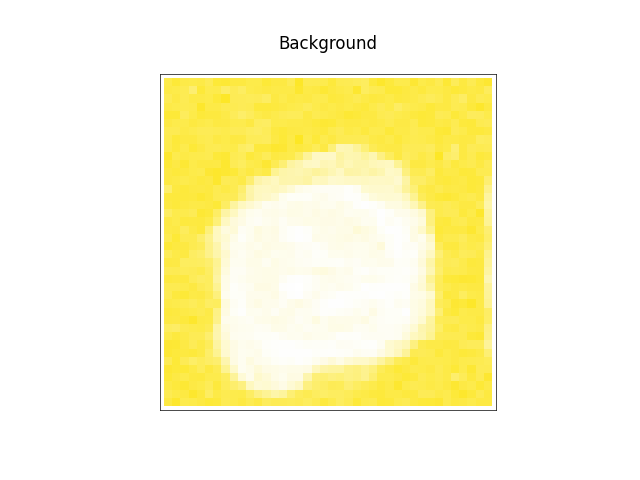

Note
Go to the end to download the full example code
Cell phenotyping
Hyperspectral unmixing of Raman spectroscopic data to analyse the biomolecular composition of cells. Data from [1].
Prerequisites
import ramanspy
import numpy as np
from matplotlib.colors import LinearSegmentedColormap
import matplotlib.pyplot as plt
import random
Set random seed for reproducibility
random.seed(12345)
Data loading
We load the data corresponding to THP-1 cells from [1] and select the first cell volume.
dir_ = r'../../../data/kallepitis_data'
volumes = ramanspy.datasets.volumetric_cells(cell_type='THP-1', folder=dir_)
# select the first volume
volume = volumes[0]
Preprocessing
We define a preprocessing pipeline to apply to the volume.
preprocessing_pipeline = ramanspy.preprocessing.Pipeline([
ramanspy.preprocessing.misc.Cropper(region=(700, 1800)),
ramanspy.preprocessing.despike.WhitakerHayes(),
ramanspy.preprocessing.denoise.SavGol(window_length=7, polyorder=3),
ramanspy.preprocessing.baseline.ASLS(),
ramanspy.preprocessing.normalise.MinMax(pixelwise=False),
])
preprocessed_volume = preprocessing_pipeline.apply(volume)
Visualising the effect of plotting.
selected_image_layer = 5
selected_spectrum_index = (15, 25, selected_image_layer)
bands = [789, 1008, 1303]
band_components = ['DNA', 'Protein', 'Lipids']
labels = [f'{comp}\n{band} cm$^{{{-1}}}$' for band, comp in zip(bands, band_components)]
Data before preprocessing.
ax = ramanspy.plot.spectra(volume[selected_spectrum_index])
Data before preprocessing with fingerprint region highlighted.
plt.subplots(figsize=(4, 3))
ax = ramanspy.plot.spectra(volume[selected_spectrum_index], title="Raw spectrum")
ax.axvspan(700, 1800, alpha=0.25, color='red', zorder=0)
ax.axvline(700, linestyle='--', c='red', zorder=0)
ax.text(730, .95, 700, transform=ax.get_xaxis_transform())
ax.axvline(1800, linestyle='--', c='red', zorder=0)
ax.text(1460, .95, 1800, transform=ax.get_xaxis_transform())
plt.show()
The raw data from the fingerprint region.
cropped = ramanspy.preprocessing.misc.Cropper(region=(700, 1800)).apply(volume[selected_spectrum_index])
ax = ramanspy.plot.spectra(cropped, title="Raw spectrum (zoomed in)")
Fingerprint region data after preprocessing.
ax = ramanspy.plot.spectra(preprocessed_volume[selected_spectrum_index], title="Preprocessed spectrum", ylabel="Normalised intensity")
Plotting spectral slices across relevant bands corresponding to biomolecular components, such as DNA, protein and lipids.
axs = ramanspy.plot.volume([preprocessed_volume.band(band) for band in bands], title=labels)
- 

- 
ax = ramanspy.plot.volume(preprocessed_volume.band(bands[1]), title=labels[1])
ramanspy.plot.image([preprocessed_volume.layer(selected_image_layer).band(band) for band in bands], title=labels)


[<Axes: title={'center': 'DNA\n789 cm$^{-1}$'}>, <Axes: title={'center': 'Protein\n1008 cm$^{-1}$'}>, <Axes: title={'center': 'Lipids\n1303 cm$^{-1}$'}>]
ax = ramanspy.plot.image(preprocessed_volume.layer(selected_image_layer).band(bands[1]), title=labels[1])

Spectral unmixing
We use the N-FINDR [2] algorithm to unmix the volume into endmembers and FCLS [3] to derive the corresponding abundance maps.
nfindr_unmixer = ramanspy.analysis.unmix.NFINDR(n_endmembers=5)
abundance_maps, endmembers = nfindr_unmixer.apply(preprocessed_volume)
Plotting results
Plotting the derived endmembers.
ax = ramanspy.plot.spectra(endmembers, wavenumber_axis=preprocessed_volume.spectral_axis, plot_type='single stacked')
Plotting a selection of endmembers that are representative of the different biomolecular components with relevant peaks used to identify the components highlighted.
selected_indices = [0, 1, 3, 4]
labels_ = ['Lipids', 'Nucleus', 'Cytoplasm', 'Background']
selected_endmembers = [endmembers[i] for i in selected_indices]
selected_abundances = [abundance_maps[i] for i in selected_indices]
plt.figure(figsize=(10, 5))
ax = ramanspy.plot.spectra(selected_endmembers, wavenumber_axis=preprocessed_volume.spectral_axis, plot_type='single stacked', label=labels_, title='Endmembers')
peaks = [789, 1008, 1066, 1134, 1303, 1443, 1747]
ax.axvline(789, linestyle='--', c='black', zorder=0)
ax.text(725, .95, 789, transform=ax.get_xaxis_transform())
ax.axvline(1008, linestyle='--', c='black', zorder=0)
ax.text(930, .9, 1008, transform=ax.get_xaxis_transform())
ax.axvline(1066, linestyle='--', c='black', zorder=0)
ax.text(1027, .95, 1066, transform=ax.get_xaxis_transform())
ax.axvline(1134, linestyle='--', c='black', zorder=0)
ax.text(1145, .9, 1134, transform=ax.get_xaxis_transform())
ax.axvline(1303, linestyle='--', c='black', zorder=0)
ax.text(1310, .95, 1303, transform=ax.get_xaxis_transform())
ax.axvline(1443, linestyle='--', c='black', zorder=0)
ax.text(1450, .95, 1443, transform=ax.get_xaxis_transform())
ax.axvline(1747, linestyle='--', c='black', zorder=0)
ax.text(1660, .95, 1747, transform=ax.get_xaxis_transform())
plt.show()
Plotting the abundance maps corresponding to the selected endmembers.
axs = ramanspy.plot.volume(selected_abundances, title=labels_, cbar=False)
- 
- 
- 

axs = ramanspy.plot.image([abundance_map[..., selected_image_layer] for abundance_map in selected_abundances], title=labels_, cbar=False)
- 
- 

- 
Plotting a merged reconstruction of the selected image slice by plotting the abundance maps in one plot.
fig, ax = plt.subplots()
cmap = plt.cm.get_cmap()(np.linspace(0, 1, len(selected_abundances)))
white = [1, 1, 1, 0]
order = ['Background', 'Cytoplasm', 'Nucleus', 'Lipids']
for label in order:
i = labels_.index(label)
ax.imshow(selected_abundances[i][..., selected_image_layer], cmap=LinearSegmentedColormap.from_list('', [white, cmap[i]]))
ax.set_title('Merged')
plt.show()
References
Total running time of the script: ( 0 minutes 51.544 seconds)